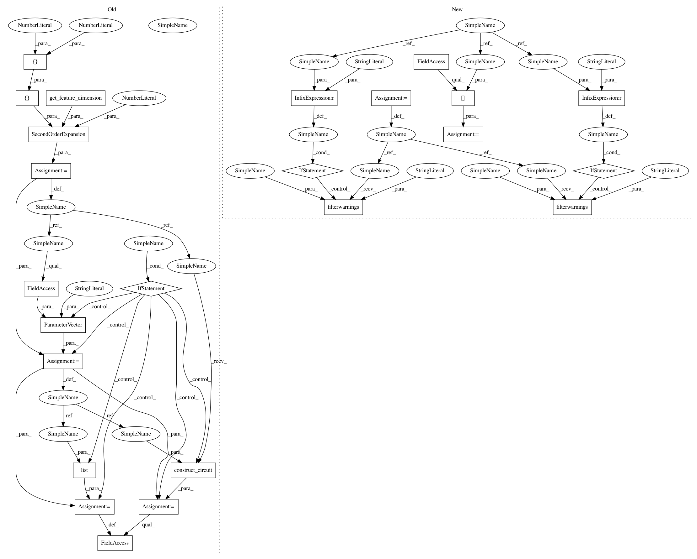

97c9871e334ae1e98c4eba025cf352e70f6a6701,test/aqua/test_qsvm.py,TestQSVM,test_qsvm_multiclass_all_pairs,#TestQSVM#Any#,251
Before Change
total_array = np.concatenate((test_input["A"], test_input["B"], test_input["C"]))
aqua_globals.random_seed = self.random_seed
feature_map = SecondOrderExpansion(feature_dimension=get_feature_dimension(training_input),
depth=2,
entangler_map=[[0, 1]])
if use_circuits:
x = ParameterVector("x", feature_map.feature_dimension)
feature_map = feature_map.construct_circuit(x)
feature_map.ordered_parameters = list(x)
try:
svm = QSVM(feature_map, training_input, test_input, total_array,
multiclass_extension=AllPairs())
After Change
total_array = np.concatenate((test_input["A"], test_input["B"], test_input["C"]))
aqua_globals.random_seed = self.random_seed
data_preparation = self.data_preparation[data_preparation_type]
try:
if data_preparation_type == "wrapped":
warnings.filterwarnings("ignore", category=DeprecationWarning)
svm = QSVM(data_preparation, training_input, test_input, total_array,
multiclass_extension=AllPairs())
if data_preparation_type == "wrapped":
warnings.filterwarnings("always", category=DeprecationWarning)
quantum_instance = QuantumInstance(BasicAer.get_backend("qasm_simulator"),
shots=self.shots,
seed_simulator=aqua_globals.random_seed,
seed_transpiler=aqua_globals.random_seed)
In pattern: SUPERPATTERN
Frequency: 3
Non-data size: 24
Instances
Project Name: Qiskit/qiskit-aqua
Commit Name: 97c9871e334ae1e98c4eba025cf352e70f6a6701
Time: 2020-04-30
Author: jules.gacon@googlemail.com
File Name: test/aqua/test_qsvm.py
Class Name: TestQSVM
Method Name: test_qsvm_multiclass_all_pairs
Project Name: Qiskit/qiskit-aqua
Commit Name: 97c9871e334ae1e98c4eba025cf352e70f6a6701
Time: 2020-04-30
Author: jules.gacon@googlemail.com
File Name: test/aqua/test_qsvm.py
Class Name: TestQSVM
Method Name: test_qsvm_multiclass_all_pairs
Project Name: Qiskit/qiskit-aqua
Commit Name: 97c9871e334ae1e98c4eba025cf352e70f6a6701
Time: 2020-04-30
Author: jules.gacon@googlemail.com
File Name: test/aqua/test_qsvm.py
Class Name: TestQSVM
Method Name: test_qsvm_multiclass_one_against_all
Project Name: Qiskit/qiskit-aqua
Commit Name: 97c9871e334ae1e98c4eba025cf352e70f6a6701
Time: 2020-04-30
Author: jules.gacon@googlemail.com
File Name: test/aqua/test_qsvm.py
Class Name: TestQSVM
Method Name: test_qsvm_multiclass_error_correcting_code